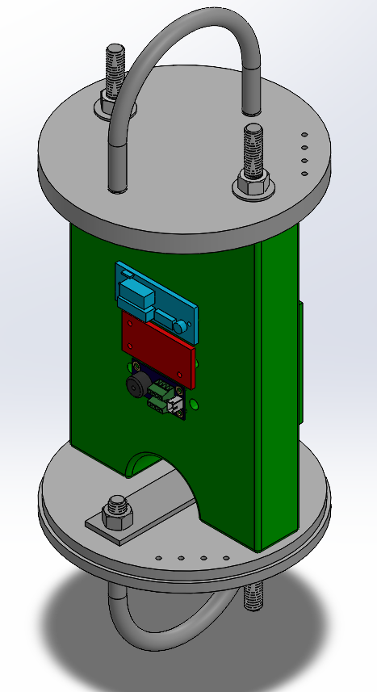
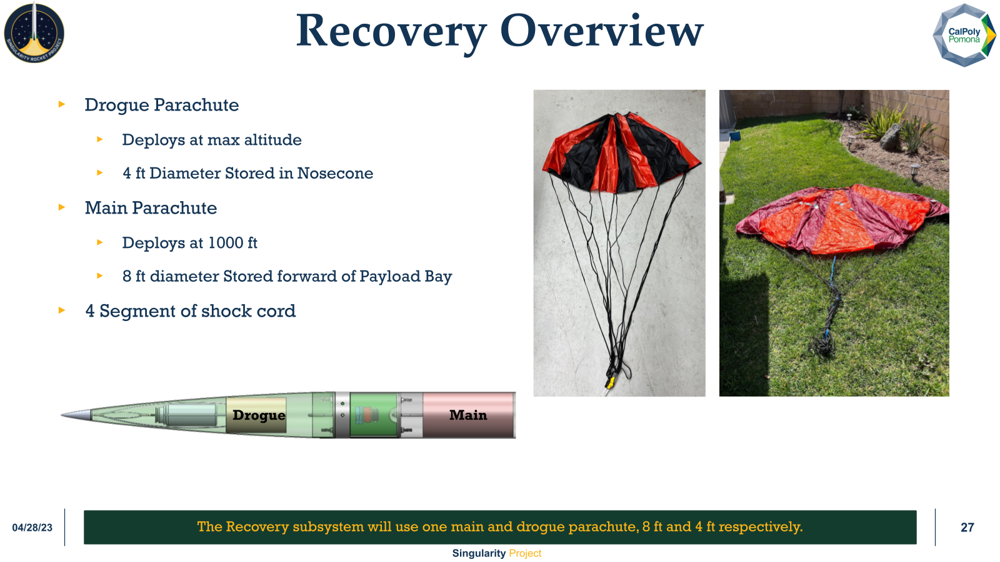

UMBRA / Cal Poly Pomona · August 2021–May 2023
Singularity
Bring the systems together.
Check how they separate.
Singularity was an UMBRA student rocket project at Cal Poly Pomona for the FAR 51025 competition. I was responsible for system integration and parachute packing, and performed GPS range tests. I also troubleshot integration issues and recovery pop tests, refining the ejection-charge setup.
Avionics & Recovery Engineer, Systems Liaison
Integration & packing
Packing had to fit the assembled vehicle.
The launch checklist connected parachute preparation with vehicle integration: line condition, coordinated main-parachute folding, pack fit, harness connections across the payload and avionics bay, and clearance so cords could not catch on the payload.

View the recovery layout and parachutes

April 1, 2023 test flight
Recovered intact, with an unexpected deployment.
The team reported roughly 3,900 ft on the April 1 test flight. The rocket was recovered without damage, but the main and drogue parachutes deployed together and the main charges did not fire. With the altimeter log unavailable, follow-up work focused on retention pins, battery connections, and the deployment sequence.
GPS testing
From tracker comparison to range tests.
I worked on the initial GPS comparison. The early Featherweight choice later changed to Big Red Bee as the team revised the trade study.
I carried out a GPS field test across approximately six miles, with a stable connection between the two sites.
Fabrication
Make tools for fin installation.
The fabrication work included manufacturing custom hand tools for fin installation and milling jig slots for alignment.